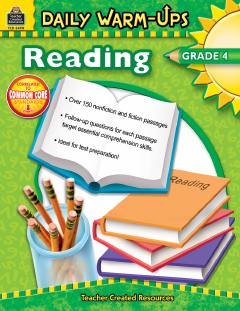

DW4-sinf o'quvchilari uchun o'qish va tushunish qobiliyatini oshiruvchi kundalik mashqlar to'plami.
Ushbu kitob 4-sinf o'quvchilarining o'qish va matnni tushunish qobiliyatlarini rivojlantirishga mo'ljallangan kundalik mashqlarni o'z ichiga oladi. Unda badiiy va ilmiy-ommabop matnlar, shuningdek, Bloom taksonomiyasiga asoslangan tahliliy savollar jamlangan.